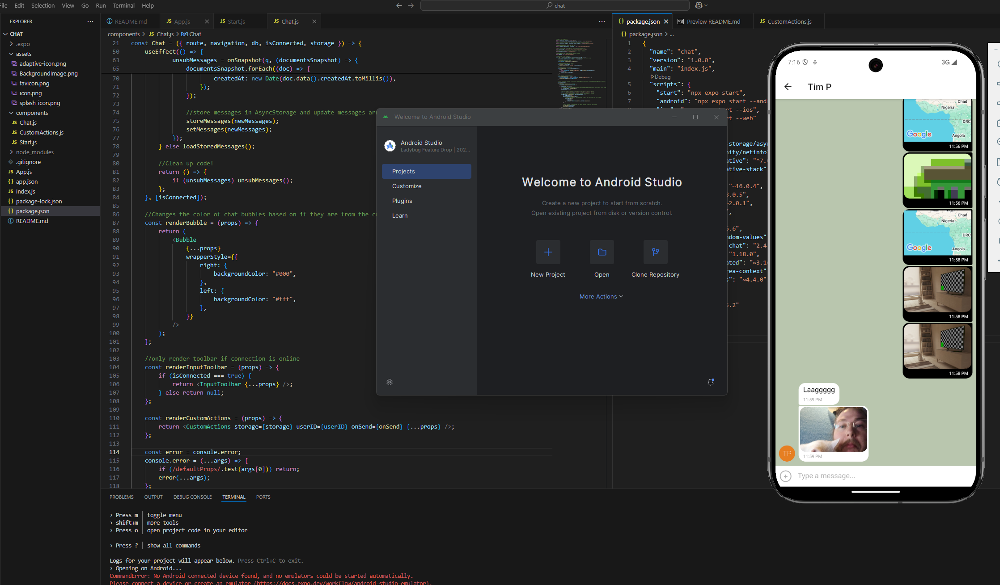

Chat Application Case Study
Chat with your friends in real time!
Chat is a mobile application built with React Native and powered by Google Firestore as its database. It enables users to chat with friends in real time, sending and receiving messages instantly across devices. Users can join the chat room, share messages, images, and their location, and enjoy a seamless messaging experience on their mobile devices. All chat data is securely stored and synchronized using Firestore, ensuring reliable and up-to-date conversations.
Why Build This Project?
I created this project as part of the Full Stack Immersion course at CareerFoundry. The purpose of this app was to demonstrate my ability to build a real-time chat application using React Native and Firebase, enabling users to send messages, share images, and interact instantly across devices. During the development of this app I dove deep into many web development fundamentals, such as:
- React Native
- Google Firebase
- Expo
- Auth0
- Gifted Chat
- Node.js
The Process
Time:
This project took about a week to complete. Setting up the Firestore database and integrating it with React Native was a smooth process, but implementing real-time messaging and ensuring seamless synchronization across devices presented unique challenges. Most of my time was spent refining the chat interface, handling media sharing, and making sure the user experience was intuitive and responsive on mobile devices.
Credits:
Lead Developer/Designer: Timothy Pamplin
Tutor: Matthew Henderson
Mentor: Drew Mercer
Tools
- Google Firebase
- Expo
- VSCode
- Node.JS
- Git
- Github
The Build
Before building the user interface, I focused on deploying the backend to ensure a solid foundation for the chat application. Once the backend was up and running, I shifted my attention to building the front end using React Native. This allowed me to create an interactive and responsive user experience that communicates seamlessly with the backend. The following steps outline how I approached and completed both the backend deployment and the front end development process for the chat app.
Step 1: Firebase
To handle authentication securely and efficiently, I used Firebase Authentication with anonymous login. This approach allows users to access the chat application instantly without the need to sign up or register. By leveraging Firebase's anonymous authentication, I ensured that each user has a unique identity while keeping the login process simple and seamless. This made it easy for users to start chatting right away, while still maintaining secure access to the app.
Step 2: User Interface
With the backend in place, I used React Native to build a responsive and interactive front end. React Native’s component-based architecture allowed me to efficiently create reusable UI elements and organize the user interface. I focused on making the app easy to use and ensuring it looked good on both iOS and Android devices. This approach made it straightforward to update and improve the UI as the project progressed. Additionally, I integrated Gifted Chat to provide a robust chat interface, supporting text, images, and location sharing.
Step 3: Styling and Media
In the final step, I focused on styling the application and integrating media sharing. I used CSS-in-JS and React Native styles to create a clean look that works well on mobile devices. For media, I implemented image and location sharing features, allowing users to send photos and their current location in chat. This combination of thoughtful styling and rich media features helped bring the chat application to life and provided a polished user experience.
Testing
To ensure the chat application worked as expected, I tested it extensively by hand on both iOS and Android devices. I manually verified all core features, including sending and receiving messages, media sharing, and authentication. By simulating real user interactions and edge cases, I was able to identify and fix issues, ensuring a smooth and reliable user experience.
Final Product!
The final chat application is a mobile app that brings together all core features in one seamless experience. Users can join chat rooms, send and receive messages in real time, share images and locations, and enjoy a responsive and intuitive interface. The app’s real-time data updates and secure authentication make it easy for users to stay connected with friends from anywhere.
Conclusion
How did this project go?
Throughout the development of this project, I encountered several challenges that helped me grow as a developer. One of the main hurdles was integrating real-time messaging with Firestore and handling media uploads. Ensuring secure and seamless authentication with Firebase required careful configuration and troubleshooting. Additionally, managing asynchronous data flow in React Native—especially when dealing with real-time updates and user interactions—proved to be complex at times. Styling the application to be fully responsive across devices also took significant effort, as I wanted the user experience to be consistent and intuitive. Finally, writing comprehensive tests with Jest and Cucumber was initially challenging, but it ultimately improved the reliability and maintainability of the codebase.
View This Project
What would I add or change?
If I were to continue developing this project, I would focus on implementing individual (one-on-one) chats, since the current app is technically only a group chat. I would also like to expand user profile customization beyond just the display name, allowing users to change their avatar and other profile details. Additional features such as message reactions, push notifications for new messages, support for voice messages or video calls, improved accessibility, and multi-language support would further enhance the app.